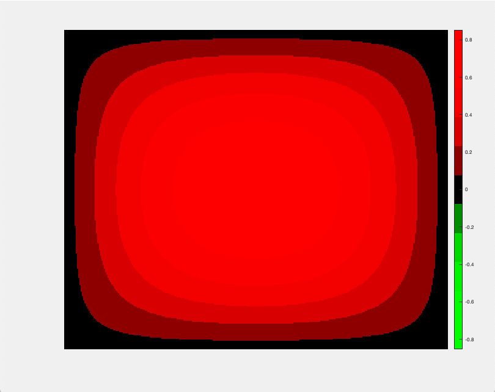

Numerical Solutions to PDEs (2020)
Evaluated Upwind, Lax, Lax-Wendroff, Leap-Frog, MacCormack numerical solutions to Linear-Advection equation. Compared convergence of schemes. Studied the effect of changing parameters such as grid spacing in time and space. Solved Laplace Equation through grid discretization and iterative methods (Sucessive Over Relaxation, Gauss-Seidel). Solved 2D diffusion equation using approximate factorization method (above image corresponds to the numerical solution to the 2D diffusion of heat in a square plate).